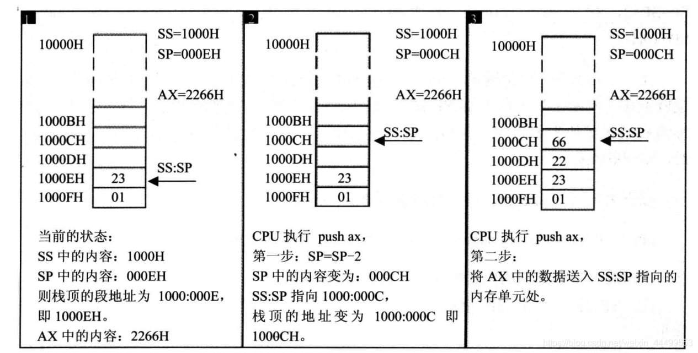
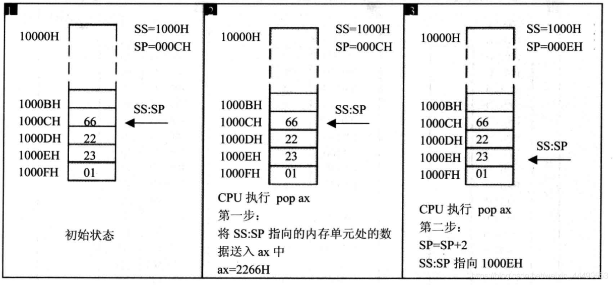

从0开始的汇编语言（三）
前言
从0开始的汇编语言系列，选用的参考书籍是清华大学出版社，王爽老师的《汇编语言第四版》。该系列属于博主的笔记系列，文中会采用一些书中的例子，图片以及思考题供读者阅读，如需详细学习汇编语言可以购入一本，谢谢。
学习之前我们做如下约定（随着学习深入还会出现新的约定）：
- 十六进制数均以H结尾
- 使用8086CPU作为案例
话不多说我们马上开始。
字节型数据与字型数据
众所周知，字节与字之间存在着一种二倍的关系，也就是说2个字节就等于1个字。由于内存单元是字节单元，也就是说一个内存单元只存储一个字节，所以计算机使用两个连续的内存单元存储一个字。计算机将这个字的第八位放在低位内存单元中，将高八位放在高位内存单元之中。我们称起始地址是N的字单元为N地址字单元。
DS和[address]
现在我们知道了计算机如何将一个字存储到内存单元之中，但是计算机又如何从内存单元之中取出一个字呢？这就要提到另一个段寄存器DS了。DS寄存器中通常存放着要访问数据的段地址。（Tips：物理地址=段地址×16+偏移地址）
例如我们想要读取10000H中的数据，我们就编写了如下的程序：
1 | mov BX,1000H |
这样我们就把10000H中的字节型数据存放到了AL中。
这个时候我相信肯定有的小伙伴就要发出了疑问“只有段地址没有偏移地址怎么能确定一个准确的内存单元呢？”我也相信有小伙伴已经发现了华点盲点。没错，DS和CS相同，也有一个搭档用来指示偏移地址，而这个搭档就是”[ address ]”。中括号中包含的地址就是偏移地址。
这里还需要注意的事是我们明明可以通过使用mov指令直接将1000H送入DS中，为什么还要大费周章先把1000H送入BX中再将BX中的数据送入DS呢？这个问题其实很简单，因为8086CPU不支持你这样做，这是一个硬件设计的问题，所以我们就记住要这样为DS提供地址。
栈
相信有计算机基础的小伙伴对于栈一定不陌生了，不过这里还是给各位介绍一下栈。我们举一个例子，我平时打羽毛球都会从桶中拿出第一个球，而这个球的下场只有两个，我把它打残废，我从羽毛球桶中拿出下一个球，或者它老老实实的配合我拍照，我把它放回桶中。这整个过程中，球都只从上面的开口中取出或者放入，我们没有从另一端取出在放入，这样的存取和最初生产出来的时候是相反的。所以我们给出栈的定义：栈是一种使用受限的线性表，其中数据符合后进先出（LIFO）的存取原则。
CPU提供的栈机制
现如今的CPU中都有栈的设计。8086CPU提供了出栈与入栈的指令，即PUSH（入栈）与POP（出栈），当然这两个指令都是以字为单位进行的。我们看一个简单的例子：
注意栈是由高位空间向低位空间延伸的，所以两个相邻的内存单元，一个字的高八位要放在下面，低八位放在上面。
SS与SP
看了上面的例子，我们对于PUSH与POP有了一定的了解，但这同时也引出了一个问题，既然栈需要从栈顶存入或者取出数据，那CPU怎么知道栈顶的位置呢？CPU又怎么能知道哪里才是栈呢？我都不知道！咳咳，这就要提到我们的段寄存器SS啦！当然也不能忘了SS的搭档SP。SS中存储的是栈顶元素的段地址，SP中存储的是栈顶元素的偏移地址。现在我们就可以知道PUSH与POP具体做了什么了。
例如PUSH AX（Tips:栈由高位空间向低位空间增长）：
- SP=SP-2，SS:SP指向当前栈顶前面的单元，以当前栈顶前面的单元为新的栈顶
- 将ax中的内容送入SS:SP指向的内存单元处，SS:SP此时指向新的栈顶

POP AX就和PUSH恰恰相反啦（Tips:栈由高位空间向低位空间增长）：
- 将SS:SP指向的内存单元处的数据送入寄存器AX中
- SP=SP+2,SS:SP指向当前栈顶下面的单元，以当前栈顶的下一个单元为新的栈顶

注意！！这里POP执行后并不是将数据销毁，数据实际还在，只不过栈顶元素的位置发生了改变，数据不在栈里面了。当下一次执行PUSH等入栈指令时，将重新写入一个新的数据，将旧的数据覆盖掉（也就是2266H将被覆盖。）
栈顶超界的问题
相信学习过数据结构，有过手撸栈经历的小伙伴对这个问题并不陌生，是的，SS和SP只记录了栈顶元素的段地址和偏移地址，只有这样无法确保我们对栈的操作不会出现栈顶超界的问题，我们自行设计栈时通常会采用计数等方法保证栈顶不会超界，但遗憾的是8086CPU并没有这样的设计，这就要求我们在使用栈之前，根据可能用到的最大栈空间安排栈的大小，执行出栈时也要注意栈是否已空。
栈段
我们之前学习过，我们在编程的过程中可以使用一个起始地址是16倍数的，长度为N（N≤64KB）的内存单元作为栈使用。那么问题来啦：
如果将10000H~1FFFFH作为栈段，初始情况下栈是空的，此时，SS=1000H，SP=?
可能有的小伙伴会想SS:SP指向栈顶元素当栈顶元素出栈就是空的，所以SP就是FFFF+2也就是0001H嘛（应该不止我一个人会这样叭。。）栈操作都是以字为单位操作的，当栈中含有一个数据时，SS:SP应该指向的是1FFFEH，所以其实SP=FFFE+2=0000H。也可以简记为栈底加一才是真正的栈底。
 wechat
wechat alipay
alipay